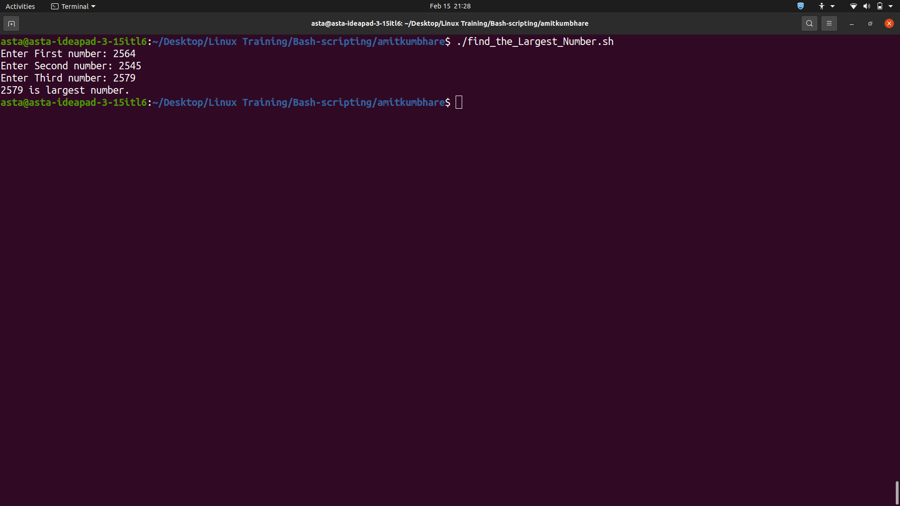

Find the Largest Number
This Bash script prompts the user to enter three numbers and finds the largest number among them.
#!/bin/bash
echo -n "Enter First number: "
read var1
echo -n "Enter Second number: "
read var2
echo -n "Enter Third number: "
read var3
if [[ $var1 -ge $var2 ]]
then
if [[ $var1 -ge $var3 ]]
then
echo "$var1 is largest number."
else
echo "$var3 is largest number."
fi
else
if [[ $var2 -ge $var3 ]]
then
echo "$var2 is largest number."
else
echo "$var3 is largest number."
fi
fi
The output of the script is displayed in the terminal. The largest number among the three entered numbers is printed on the screen.

Explanation:
- This is a Bash script that prompts the user to enter three numbers and then determines which one is the largest.
- The script begins by using the "echo" command to prompt the user to enter the first number. It then uses the "read" command to read in the value entered by the user and store it in the variable "var1".
- The script repeats this process for the second and third numbers, prompting the user to enter each one and storing the value in the variables "var2" and "var3".
- The script then begins the logic to determine which of the three numbers is the largest. It starts by checking if the value of "var1" is greater than or equal to the value of "var2". If it is, then it checks if "var1" is also greater than or equal to "var3". If both conditions are true, it outputs a message indicating that "var1" is the largest number.
- If "var1" is not the largest number, the script checks if "var2" is greater than or equal to "var3". If it is, it outputs a message indicating that "var2" is the largest number. If not, it outputs a message indicating that "var3" is the largest number.